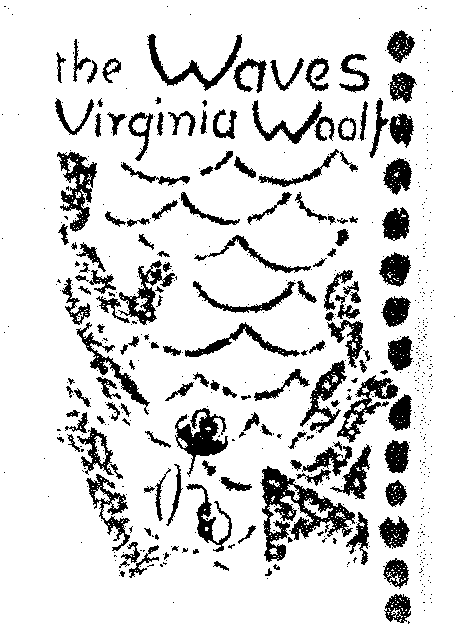
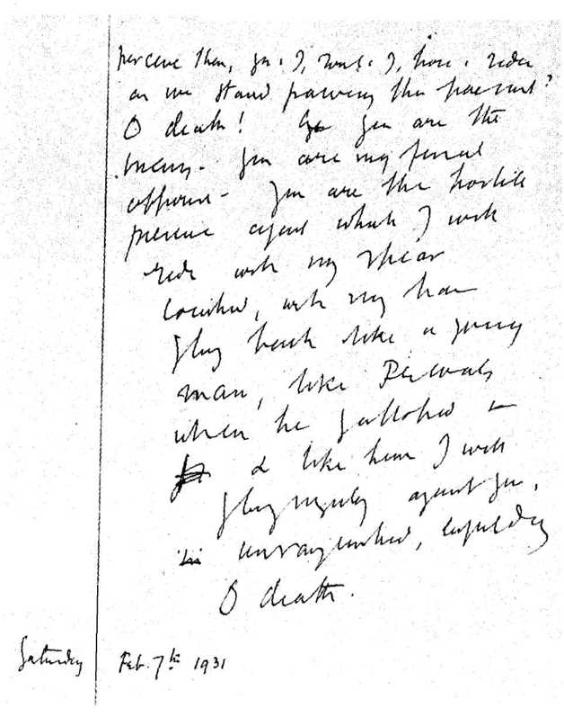

Bölüm 15
The Waves
Virginia Woolf, 1931’de yayınladığı The Waves’i yazarken, bu kitapla o güne değin hiçbir başka romancının göze alamayacağı değişik şeyleri yapmak istediğini, bu romanın o güne değin yazılan hiçbir başka romana benzemeyeceğini biliyordu. Bu yüzden de yoğun sıkıntılar çekiyordu. Gerçi Mrs. Dalloway’de de, To the Lighthouse’da da yenilikler yapmıştı. Ama Kasım 1931 güncesinde değindiği gibi, The Waves “kendine özgü biçemle” yazdığı ilk yapıtıydı (“my first work in my own style”). Üstelik, “kitaplarının en karmaşığı, en güç anlaşılanıydı” (“the most complex and difficult of all my books”). Çünkü The Waves, “hem düzyazıyla kaleme alınacak, hem de şiir olacaktı; hem roman olacaktı, hem de tiyatro oyunu” (“prose yet poetry, a novel and yet a play”). Güncesinde The Waves’den “a play-poem” (bir tiyatro oyunu-şiir) diye de söz eder. İleride göreceğimiz gibi, bu kitap, gene yazarın deyişiyle, kişilerin “soliloquy”lerinden, yani tiyatro oyunlarına özgü kendi kendine konuşmalardan oluştuğu ve “dalgaların ritmine” (“in the rhythm of the waves”) uyan bu konuşmaların şiirle yüklü olduğu için, “tiyatro oyunu-şiir” tanımlaması hiç de yersiz sayılamaz. Virginia Woolf, bu çok güç işi başarabilmek amacıyla, kitabını sürekli düzeltmekle yetinmedi; iki yıl içinde The Waves’i üç kez yeniden yazdı.

The Waves’in kapağı, Vanessa Bell, 1932.
Mrs. Dalloway’de ve To the Lighthouse’da, gerçekçi roman geleneğinin izleri, çok da az olsa, görülüyordu gene de. Gerçi beylik anlamda olay örgüsü diyebileceğimiz bir şey yoktu. Ama elle tutulur olgular vardı, zaman ve mekân vardı. Clarissa Dalloway’in, tam hangi saatte, Londra’nın tam neresinde bulunduğunu biliyorduk her zaman. Oysa Virginia Woolf, “I shall do away with exact place and time” (Zamanı ve mekânı tam vermekten vazgeçeceğim) diyerek, The Waves’de dış dünyayı sanki yok etti. Kişilerinin ancak iç dünyalarını vermek istedi. Daha doğrusu, dış dünyayı nesnel olarak değil, ancak kişilerin iç dünyalarına yansıdığı kadarıyla verdi. Gerçekçi roman geleneğinden tam bir kopuştu bu.
Öylesine kesin bir kopuştu ki, bu kitaba roman adını vermek bile biraz saçma gelir insana. Çünkü The Waves bir roman değil, düzyazıyla yazılmış bir şiirdir aslında. Virginia Woolf’un başlıca özelliği olan şiirsellik, ilk iki romanından sonra yazdığı Jacob’s Room’da, Mrs. Dallovay’de ve To the Lighthouse’da da görülür elbette. Ama The Waves’de iyice yoğunlaşmış, tüm kitaba egemen olmuştur artık. Kasım 1928 güncesinde, The Waves’i ilk tasarlamaya başladığı sıralarda, edebiyatın özünün şiir olduğunu bildiği için, “şiir olmayan herhangi bir şey edebiyata neden girsin ki?” (“Why admit anything to literature ıvhich is not poetry?”) diye soruyordu kendi kendine. The Waves’i “bir olay örgüsüne uyarak değil, bir ritme uyarak yazdığını” (“I am writing The Waves to a rhtym, not to a plot”) söylüyor ve dalgaların sesine uyan kitabını, şiir nasıl okunursa öyle, yani yüksek sesle okuyarak gerekli düzeltmeleri yapıyordu.
Çoğu eleştirmenlere göre, The Waves, Virginia Woolf’un başyapıtıdır. E.M.Forster, To the Lighthouse’ı şahsen daha çok sevmekle birlikte, The Waves’i, yazarın kendine özgü roman yöntemini olağanüstü bir başarıyla uygulamaya koyduğu en büyük kitabı sayar. 1930’lu yılların ünlü şairi Stephen Spender, The Waves’i düzyazıyla yazılmış görkemli bir şiir olarak över. Joan Bennett’e göre, The Waves, Virginia Woolf’un en özgün kitabıdır ve yazarın, çocukluktan yaşlılığa değin yaşamı ve ölümü nasıl algıladığını en kapsamlı biçimde gösterir. Joan Bennett’in bu görüşünü benimseyen Jean Guignet’ye bakılacak olursa, Virginia Woolf’un ne olduğunu, ne düşündüğünü, ne duyduğunu okuyuculara tam olarak aktaran The Waves’in, onun başyapıtı sayılması gerektiği hiç kuşku götürmez.
The Novel and the Modern World’de (Roman ve Modern Dünya) yazdıklarından anlaşıldığı gibi, The Waves’in değeri konusunda kuşkuları olan ender eleştirmenlerden biri David Daiches’dir. Daiches’e kalırsa, Virginia Woolf, ne Mrs. Dalloway’de, ne de To the Lighthouse’ da gösterebildiği akıllara sığmaz ustalığı, The Waves’de gözler önüne serer. Ne var ki, The Waves, bu iki kitap kadar dipdiri, bu iki kitap kadar canlı kalmaz okuyucuların düşgücünde. Çünkü garip bir yapaylığı vardır. Ne tam roman sayılabilir, ne de tam şiir. Roman olsaydı, Henry James’in “the sense of felt life” (duyumsanan yaşam olgusunu) bize daha iyi iletmesi gerekirdi. Eğer şiirse, şiirselliği çok daha yoğun olmalıydı.
Aşağı yukarı 250 sayfa tutan The Waves, dokuz bölümden oluşur. Bu bölümlerde, kitaptaki altı kişinin bilinç akımı aktarılır bizlere. Her bölümde altısı da yoktur her zaman. Örneğin, beşincisinde ancak üçü, sonuncusunda ise ancak biri konuşur. Bölüm başlangıçlarında, italik harfle dizilmiş ve düzyazıyla yazılmış bir iki sayfalık şiirler vardır. Bu şiirsel metinlerde, kişiler hiç görülmez. Hepsinde aynı mekân anlatılır: Denize açılan bir bahçe; bahçedeki ağaçlar, çiçekler, kuşlar; kumsal, deniz, dalgaların sesi ve kişilerin çocukken birlikte oturdukları ve birinci bölümden sonra hiç ayak basmadıkları kıyıdaki ev. Bu dekor hiç değişmez; ya da mevsimlere göre çok az değişir. Gerçekten değişen tek şey, güneşin gökyüzündeki durumudur; güneşin doğuşu, yükselişi ve batışıdır. Bu da, kişilerin geçirdikleri evreleri, gençlikten yaşlılığa doğru ilerleyişlerini gösterir. Dikkat edilirse, bu dokuz metnin her biri “the sun” (güneş) sözcüğüyle başlar. İlk metinde “The sun had not yet risen” (Güneş henüz doğmamıştı); son metinde “The sun had sunk” (Güneş batmıştı) denilir.
Bir önceki paragrafta, Virginia Woolf’un, kişilerinin bilinç akımını bize aktardığını söylemiştik. Ne var ki, bu bilinç akımı, James Joyce’un Ulysses’te kullandığı yönteme hiç benzemez. Mantıkla açıklanamayacak çağrışımlarla konudan konuya atlamalara hiç başvurulmaz. Yazar, titiz bir özümseme ve arıtma süreci uygular. Kişilerin bilincinden ya da bilinçaltından geçen her şeyi değil, Mrs. Dalloway’de, To the Lighthouse’da da yaptığı gibi, ancak bazı şeyleri verir. Bunların sadece düşünülmediklerini, söylendiklerini iyice belirtmek için de, italik harfle ve tırnak içinde “Susan said” (Susan dedi ki) ya da “Bernard said” (Bernard dedi ki) gibi sözcükler ekler. The Waves’deki kişilerin iç dünyaları arasında sürekli bir iletişim bulunduğu halde, birbirileriyle konuşmaları nerdeyse hiç görülmez. Anımsadığımız kadarıyla, birinci bölümde Susan ile Bernard, çocukken bir ara konuşurlar. Dördüncü ve sekizinci bölümde, hepsi bir araya geldiklerinde, kısa bir iki diyalog vardır. Bunların dışında, kişiler, Virginia Woolf’un deyişiyle “soliloquy”ler yaparlar, yani tek başına konuşarak, akıllarından geçenleri bizlere söylerler. Ama şiirin egemen olduğu bu dilin, insanların günlük yaşamda konuştukları dille hiçbir ilişkisi yoktur. İşin bir ilginç yanı da, bu altı kişinin kendilerine özgü bir ifade biçimi, kişiliklerinin damgasını taşıyan özel bir konuşma üslûbu olmayışıdır. Altısı da, bir tek kişiymiş gibi, aynı dili, aynı söyleyiş biçimini kullanırlar. Virginia Woolf, gerçekçiliğe saygı göstermek kaygısna hiç gerek görmediğinden, çocukken kullandıkları dille, yetişkinken kullandıkları dil arasında da hiçbir ayrım yoktur. Bu altı kişinin, üslûp benzerliğine karşın, birbirine hiç benzememeleri, her birinin, hem birbirinin eşi, hem de ötekilerden tümüyle farklı bir başka kişi olması, işin bir başka ilginç yanıdır.
The Waves’in geleneksel romanlar gibi bir tek başkişisi, bilemediniz iki başkişisi değil, altı başkişisi vardır. Bunlardan üçü kadın (Susan, Jinny, Rhoda), üçü de erkektir (Louis, Neville, Bernard) Demin belirttiğimiz gibi, bunlar, birbirilerinden tümüyle farklı kişiler oldukları halde, tâ çocukluklarında başlayan ve sonuna değin aslâ kopmayan gizemli bir bağla bağlıdırlar birbirilerine. Bir de yedinci kişi vardır: Altısının da taparcasına sevdiği, yirmi beş yaşındayken Hindistan’da ölen Percival. Ne ki, kitabın odak noktası sayılabilecek Percival’i ne görürüz, ne de aklından geçenleri biliriz. Ancak öteki altı kişinin bilincine yansıdığı kadarıyla tanırız onu. Bu altı kişi ve Percival dışında, yazar hiç kimseden söz etmez. Örneğin, Susan evlenir, Bernard da evlenir; ama onların eşleri, ya da eşcinsel olan Neville’in ilişki kurduğu delikanlılar, Louis’nin yaşamına giren kadınlar konusunda pek bilgimiz yoktur. Virginia Woolf güncesinde, amacının kişiler üstünde durmak, kişilikler yaratmak olmadığını ileri sürerek, The Waves’deki kişilerin Times’ın edebiyat eleştirmeni tarafından övülmesine çok şaşar. Oysa, yazar, istemeyerek de olsa, kişiler yaratmıştır bu kitapta; hem de kişilikleri Mrs. Dalloway ya da To the Lighthouse’da gördüklerimizden belki çok daha belirgin kişiler.
The Waves’deki kişileri düşündükçe, iki soruyla karşılaşırız: Bu üç kadınla üç erkek, bir tek insanın değişik yanları mıdır? Ve o tek insan yazarın kendisi midir? Virginia Woolf, bir mektubunda, birinci soruya “evet” dercesine bir söz eder: “That there should be many characters and only one” (Hem birçok kişi, hem de bir tek kişi) yaratmayı amaçladığını ileri sürer. Güncesinde ise, “altı yaşamdan oluşan altı petalli bir çiçeğe” (“a six-petalled flower made of six lives”) benzetir kişilerini. Aralarındaki bireysel ayrımlara karşın, sanki aynı iç dünyayı paylaşıyorlarmış gibi, o altı kişiyi aynı biçimde konuşturmasının nedeni de bu olsa gerek. Ayrı cinsiyetten üçer kişi seçmesi ise, daha önce de değindiğimiz gibi, insanların, erkeksi ve kadınsı öğeleri kişiliklerinde birleştiren androjen yaratıklar olduğuna inanmasından kaynaklanabilir. Çoğu eleştirmenler -bu arada E.M.Forster ve Doroty Brewster- aslında The Waves’deki kişilerin, Virginia Woolf’un da söylediği gibi, değişik yanları olan bir tek kişi sayılabileceği görüşünü benimsemişlerdir. Dalgalar hem birbirile-rine benzedikleri, hem de birbirilerinden ayrı oldukları için, kitabına “Dalgalar” adını vermesinin nedenlerinden biri de bu mu diye düşündüğümüz olur.
Kitapta (dikkat edilirse, “romanda” demekten sanki çekiniyoruz) yazarın sözcüsü olan Bernard, çocukluklarında kendilerini, yalnız ruhsal açıdan değil, bedensel açıdan da bir tek kişi bildiklerini ve ayrı bedenleri olduğunun farkına varınca, “korkunç acı çektiklerini” (“we suffered terribly as we became separate bodies”) söyler, dokuzuncu ve son bölümde de şöyle der:
“I am not always one person... Nor do I always know if I am man or woman, Bernard or Neville, Louis, Susan, Jinny or Rhoda.”
(Ben her zaman bir tek kişi değilim... Kadın mı, yoksa erkek mi olduğumu, Bernard mı, ya da Neville mi, Louis, Susan, Jinny ya da Rhoda mı olduğumu da bilmiyorum her zaman.)
Aynı bölümde, bu düşüncesini yineleyerek, kendini sorgular: Bernard denilen kimdir? Neville’in, Louis’nin, Susan’ın, Jinny’nin, Rhoda’nın bir parçası mıdır? Onlardan ayrı bir varlık mıdır yoksa? Kendini neden onların bölünmez bir parçası saymaktadır öyleyse? Arkadaşlarıyla kendisi arasında bir bölünme olabileceği kuşkusu, ancak Percival ile Rhoda’nın ölümünden sonra, sekizinci bölümdeki son toplantılarında Bernard’ın bir ara aklına gelir; ama bu kuşkunun gelmesiyle geçmesi bir olur:
“We sit here together. But now Percival is dead, and Rhoda is dead; we are divided; we are not here. Yet I cannot find any obstacle separating us. There is no division between me and them.”
(Burada beraber oturuyoruz. Ama artık Percival öldü, Rhoda da öldü; biz bölündük, biz burada değiliz. Ama bizi ayırabilecek bir engel göremiyorum gene de. Onlarla benim aramda bir bölünme yok.)
Virginia Woolf güncesinde The Waves’e “bir özyaşamöyküsü denilebileceğini” (“autobiography it might be called”) söyleyerek, kitabın kişileriyle ilgili ikinci soruya, yani bunların yazarın kendisi olup olmadıkları sorusuna da bir yanıt vermiş olur. Virginia Woolf, öteki romanlarında kendi benliğini açık seçik bir biçimde ortaya koymadığı halde, The Waves’de konuşan sesleri, yazarın benliğinin değişik sesleri sayabiliriz. Gerçi kitaptaki üç kadın, ilk bakışta ona hiç benzemezler. Onun gibi bir aydın, bir feminist, bir yazar değildirler. Ama dolaylı yoldan da olsa, Virginia Woolf’un kişiliğinden yansımalar vardır üçünde de. Susan’ın doğa tutkusunda; Jinny’nin toplumsal yaşamın eğlencelerinden hoşlanmasında, insanlar arasına girip parlamak istemesinde; özellikle Rhoda’nın yaşam karşısında ürkekliğinde, yalnızlığında, aşırı duyarlılığında ve sonunda kendini öldürmesinde görürüz bu yansımaları. Ama ne gariptir ki, The Waves’deki erkekler, kadınlardan çok daha fazla benzerler Virginia Woolf’a. Tıpkı yazarın kendisi gibi, erkeklerin üçü de bilgili ve kültürlü aydınlardır. Louis açısından, dünyanın en önemli şeyi şiirdir. Neville de şiir yazar ve Virginia Woolf gibi eşcinseldir. Çevresindekileri, tıpkı Virginia Woolf gibi her zaman merakla inceleyen, sürekli olarak aklında güzel tümceler kuran Bernard’ın tek isteği ise, roman yazmaktır.
Biraz önce de belirttiğimiz gibi, Virginia Woolf’un amacının kişiler yaratmak olmadığını söylemesine karşın, The Waves kişilerden ve bu kişilerin iç dünyalarından oluştuğuna göre, kadınlardan başlayarak, bu kişileri birer birer ele almak gerekir. Çünkü yorumlanması çok güç olan bu kitabı, ancak kişileri inceleyerek biraz daha iyi anlayabiliriz.
The Waves’deki altı kişi arasında Susan, toprağa kendini en yakın hisseden, dolayısıyla en ilkel olanıdır bir bakıma. Yumuşaklıktan, esneklikten, hoşgörüden yoksundur. Hiç ödün vermez; tüm benliğine egemen olan aşırı tutkular içindedir. Ya sever, ya nefret eder. Birçok şeyi değil, kesinlikle belirlenmiş bir tek şeyi ister: “I love, said Susan, and I hate; I desire one thing only” (Seviyorum, dedi Susan ve nefret ediyorum; ancak bir tek şeyi istiyorum). Daha küçükken, deniz kıyısındaki evin bahçesinde, Jinny’nin Louis’yi öptüğünü görünce, Louis’ye ayrıca düşkün olmadığı halde, korkunç bir kıskançlığa kapılır. Kendisi kısa boylu ve tıknazken; yaşına göre uzun boylu olan, bedeninde sanki pırlantalar varmış gibi ışıldayan Jinny’nin Louis’yi öpmesi, yoğun bir acı verir ona. Çocukken de herkesi gözlediği, insanları anlamak isteğiyle yaklaştığı için, ancak Bernard farkına varır bunun. Susan, çektiklerini ötekilerden gizler. Acısını evirip çevirip iyice inceleyeceğini; sonra mendilinin içine sıkı sıkı sarıp bir top haline getirerek, kayın ağaçlarının altına gömeceğini; evden kaçacağını, onu hiç kimsenin bulamayacağını, bir hendekte öleceğini söyler.
Susan, doğa onu nasıl yarattıysa öyle kalmak ister. Bu yüzden ikinci bölümde gittiği okuldan da, kentlerden de nefret eder. Kafasını geliştirerek, düşünerek değil, ancak içgüdülerine uyarak yaşamak ister. Düşünceleri ya da duyguları yansıtmak üzere özenle kurulmuş tümceleri anlamaz. “I do not understand phrases” (Tümceleri anlamıyorum) der. Tek anladığı şey “sevgi, nefret, öfke, acı çığlıklarıdır” (“cries of love, hate, rage and pain”).
Altı arkadaşın da taptığı Percival, Susan’a âşıktır. Ama Susan, bunun nedenini hiç açıklamadan, Percival’i istemez; o daha ölmeden bir çiftçiyle evlenir. İstediği doğaya yakın yaşamı yaşayabilecektir böylece. Koskocaman, sıcak bir mutfağı olacak; hasta kuzular sepetlere konulup, o mutfakta ısınacaklar, sağlıklarına kavuşacaklardır. O mutfağın kirişlerine jambonlar asılacak, ışıl ışıl ışıldayan kırmızı soğan demetleri asılacaktır. Ve en önemlisi, Susan çocuk doğuracaktır; çok sayıda çocuğu olacaktır. Onların diş çıkarmaları, ağlamaları, okula gidip gelmeleri “denizin dalgaları gibi” (“like the waves of the sea”) Susan’ı suyun üstünde tutacaktır, yaşamasını sağlayacaktır. Susan, “the beautiful and bestial passion of maternity”ye (analığın hayvansı ve güzel tutkusuna) kapılacaktır. Hiç çocuk doğurmayan Virginia Woolf’un, bu çarpıcı tümcede, analığa, hem “güzel” hem de “hayvansı” sıfatını uygun bulması ayrıca ilginçtir. Üstelik Susan, bu tutku yüzünden yücelmeyeceğini, tam tersine “alçalacağını” (“debased”) bilir. Çocuklarını desteklemek, onların geleceğini güvence altına almak için her alçaklığı yapabileceğini, onlarda kusur görenlerden nefret edeceğini söyler. Ve çocuk doğurmak konusunda her zaman çelişkili duygular içinde olan Virginia Woolf, Susan’a bunları söyletmekle, analığın güzel yanlarını değil, “hayvansı” yanlarını vurgulamış olur.
Susan, yaşamının, çocukları sayesinde, Jinny’nin ve Rhoda’nın yaşamlarından çok daha güzel, çok daha anlamlı olacağına inanır. Ne var ki, insanların çapraşık ve şaşırtıcı yaratıklar olduğunu hiçbir zaman unutmayan Virginia Woolf, her isteğini gerçekleştirdiğini sandığımız Susan’a, bizi hayrete düşüren sözler söyletir: Sekizinci bölümde, çocukluk arkadaşları, Hampton Court’ta son kez bir araya gelirler. Susan, geceleyin Bernard ile yürürken, doğayla uyum halinde yaşamaktan, meyva yetiştirmekten, çocuk büyütmekten çok bezdiğini; ancak kendi çocuklarını koruyan bir anne olmaktan, anaların becerisinden ve kurnazlığından tiksinti duyduğunu; ona âşık olan Percival’i zaman zaman düşündüğünü anlatır. Hattâ onlara kulak misafiri olan Louis’ye göre, Susan, “yıkılmış yaşamından, boşuna harcanmış yaşamından” (“my ruined life, my wasted life”) yakınır.
The Waves’deki kadınlar arasında, en sıradan olanı Jinny’dir. Jinny, tepeden tırnağa dişidir. Yaşamda tek istediği, erkeklerin onun çevresinde arzuyla dolanmaları, onun çekiciliğine karşı koyamamalarıdır. Kimseye bağlanmaz; aşkları hep gelip geçicidir. Çünkü Jinny için önemli olan, kendisinin bir erkeğe âşık olması değil, erkeklerin ona âşık olmalarıdır. Bunu başarabilmek için, hem bedenini kullanır, hem de giysilerinden yararlanır. Başını kıpırdatınca, ince uzun bedeninin, rüzgârda bir çiçek sapı gibi dalgalandığını bilir. İncecik, nerdeyse saydam, ışıldayan giysiler giymeye özen gösterir. Yeni âşıklar bekler; hiç tanımadığı, hiç görmediği erkekleri bekler her zaman. Bu erkekler yanından geçerken, elini hafifçe kaldırması ya da onlara “gel” diye mırıldanması yetecektir yeni bir aşk serüveninin başlamasına. Elleri birbirine dokunacak, bedenleri ansızın alev alıp tutuşacaktır. Salt cinselliği uğruna yaşayan Jinny’ye yaşlanmak ayrıca zor gelir. Otuzunu geçtikten sonra, bir ara kendini bir aynada görünce, korkudan ürperir. Kolunu hafifçe kaldırmasıyla ya da eşarbını havada biraz dalgalandırmasıyla, erkeklerin ona artık koşmayacaklarını bilir. The Waves’deki öteki kişilerden farklı olarak, Jinny kendi kendine değil, hep başkalarıyla konuşur sanki. Kitapta en az yer tutan da onun konuşmalarıdır. Bunu da doğal saymak gerekir. Çünkü Jinny, salt dış dünyayı ve o dış-dünyadaki erkekleri düşünerek yaşar. Onun bir iç dünyası yok gibidir.
Rhoda, dış dünyaya dönük Jinny’nin tam tersine, The Waves’deki üç kadın arasında, iç dünyası en zengin ve en gizemli olanıdır. Yalnız kişiliğiyle değil, ölümüyle de Virginia Woolf’a en çok benzeyen o’dur. Birinci bölümde, çok küçükken bile, dış dünyadan tümüyle kopuk bir düşler dünyasında tek başınadır. Su dolu bir çanağa çiçeklerden kopan petalleri koyar. Çanağı sallayarak, onları yüzdürür. Çanak denizdir, petaller de Rhoda’nın hayal gemileridir:
“Some will founder, some will dash themselves against the cliffs. One sails alone. That is my ship. It sails into icy caverns where the water bear barks and stalactites swing green cha-ins.”
(Kimileri batacak, kimileri dik kayalara çarpıp parçalanacak. Bir tanesi tek başına yelken açmış gidiyor. O benim gemim: Buz tutmuş mağaralara, deniz ayılarının havladıkları, sarkıtların yeşil zincirlerini salladığı mağaralara gidiyor.)
Rhoda’nın yaşam karşısında güçsüzlüğü, duyduğu derin korkular, Virginia Woolf’un kimi zaman çektiği bunalımlara benzer. Bir kapı açılınca, sanki bir kaplan üstüne saldıracakmışçasına, dehşete düşer: (“the door opens, the tiger leaps”). Sadece yaşamaktan değil, insanlardan da korkar ve doğal olarak, bu korku nefrete dönüşür. Sokakta yürüyenlere, metroda karşısında oturanlara bakar, iğrenç bir çirkinlik görür onlarda. Biri ona gülümseyince bile, salt zalimliğini gizlemek için gülümsediğini sanır. Çevresini saran cehennemden kurtulmak için, güzel görüntülerle dolu bir düşler dünyasına sığınır. Duru saydam sularla dolu havuzlar, bu havuzlara yansıyan mermer sütunlar, kanatlarını sulara hafifçe değdiren kırlangıçlar hayal eder.
Virginia Woolf, tam bir başarısızlığa uğradığını, yıkıldığını, bir hiç olduğunu sanırdı zaman zaman. Rhoda ise, bu ezikliği, bu yenilgiyi her an hissetmektedir. Herkesin toplumda bir konumu, bir işi gücü, aile bağları varken onun kimliği yoktur; hattâ bir yüzü bile yoktur. “I have no face” der ikide birde, Susan’ın, Jinny’nin yüzleri olduğunu, onların gerçekler dünyasında yaşadığını; ama o dünyada kendisinin bir yeri bulunmadığını bilir. Çevresine bakınca “I am not here” (Ben burada değilim) der. Bir uçurumun kenarında, daracık bir yolda yürüdüğünü; o uçuruma her an düşebileceğini düşünen Virginia Woolf gibi, Rhoda da her an boşluğa düşebilir:
“Alone, I often fall into nothingness. I must push my foot stealthily lest I should fall off the edge of the world into nothingness.”
(Yalnızken, sık sık boşluğa düşüyorum. Dünyanın kenarından boşluğa düşmemek için, ayağımı sinsice ileriye sürmeliyim.)
The Waves’deki üç kadınla üç erkek arasında, ancak Rhoda ile Louis bir ara sevişirler. Bu ilişki, Rhoda’yı yalnızlığından, boşluğa düştüğü, bir hiç olduğu duygusundan kurtarabilirdi belki. Çünkü Rhoda ile Louis birbirilerine benzerler. Louis’in dediği gibi, “ötekiler konuşurken sessizliği paylaşabilirler” (“Rhoda with whom I shared silence when the others spoke”). Ama Rhoda’nın, gene tıpkı Virginia Woolf gibi, bir erkeğe cinsel açıdan yaklaşmasının yolu yoktur. “I left Louis; I feared embraces” (Louis’i bıraktım; kucaklaşmalardan korkuyordum) der. Aslında ölmekten başka çaresi yoktur Rhoda’nın. Geceleri yıldızlara bakar, “consume me” (beni yakın) diye yalvarır. Öleceğini de bilir. Çocukluğunda çanaklarda yüzdürdüğü çiçekten yapılmış gemiler gibi batacaktır: “I ride rough seas and shall sink with no one to save me” (Fırtınalı denizlerde gidiyorum ve kimse beni kurtaramadan batacağım) der. On yıl sonra Virginia Woolf’u öldürecek olan sularda can verdiğini düşler:
“The sea will drum in my ears. The white petals will be darke-ned with sea water. They will float for a moment and then sink. Rolling me over, the waves will shoulder me under. Everything falls in a tremendous shower, dissolving me.”
(Deniz davul çalacak kulaklarımda, beyaz çiçek petalleri deniz suyuyla kararacak. Bir süre yüzecekler, sonra batacaklar. Üstümde yuvarlanan dalgalar, omuz vurup, beni altlarına alacak. Her şey müthiş bir sağanağa dönüşüp, beni eritecek.)
Rhoda’nın nasıl intihar ettiğini, kendini suya mı attığını, yoksa başka bir ölüm mü seçtiğini bilemeyiz. Bernard, “Always with fear in her eyes... She has killed herself” (Her zaman korku vardı gözlerinde... Kendini öldürdü) der. Ama gene Bernard’ın son bölümde söylediği çok açık seçik olmayan bir sözden, Rhoda’nın, yüksek bir sütûnun üstünden kendini aşağı attığı izlenimini ediniriz.
Biraz önce de belirttiğimiz gibi, bu altı arkadaş arasında Louis, ruhsal yapısı açısından, bir ara sevgilisi olan Rhoda’ya en çok benzeyen insandır. Onun da Rhoda kadar karmaşık bir düşgücü vardır. Hattâ şair olduğu için bu düşgücü, daha da gelişmiş, daha da yoğundur belki. İlk bölümde, onu kimse görmesin diye, saçları yapraklardan oluşmuş, kökleri yer küresinin tam ortasına saplı bir bitkiye dönüşmek ister. Karanlık basarken bahçenin çiçeklerine bakınca, onları koyu yeşil suların içinde yüzen ışıklı balıklara benzetir. Louis’nin gözleri, kendi gözleri değildir; Nil kıyısında, çölde, bir taş heykelin her zaman açık kalan gözleridir. Başlarında kırmızı testilerle nehre giden kadınlar, sarıklı erkekler, salına salına ilerleyen deve kervanları görür o gözlerle. Louis’nin hayalinde yoğun korkular da vardır: Ne olduğunu bilmediği çok büyük bir hayvanın kumsala zincirlendiğini, ayağını sürekli kuma vurduğunu duyar. Virginia Woolf, The Waves’in her bölümünün başına koyduğu düzyazıyla yazılmış şiirlerin beşincisinde, Louis’nin duyduğu bu sesi, dalgaların gümbürtüsüne benzetir. Büyük bir hayvan ayağını yere vururken nasıl güm güm diye bir ses çıkarırsa, kumsala çarpan dalgaların da öyle gümbürdediklerini söyler.

Virginia Woolf’un elyazısıyla The Waves’in son sayfası.
Bir tek iyi şiir yazdıktan sonra ölmeye râzı olan Louis, büyüyünce de düşgücünü korur. Çocukken duyduğu sesi her zaman duyar: “I hear always the sullen thud of the waves; and the chained beast stamps on the beach. It stamps and stamps.” (Dalgaların kasvetli gümlemesini her an duyuyorum. Kumsalda zincirli hayvan, ayağını hep yere vuruyor. Vuruyor da vuruyor.)
Louis, bundan önce birbirinden görkemli binlerce yaşam yaşadığını; bir Arap prensi, Elizabeth Çağı’nda büyük bir şair, Fransız Kralı On Dördüncü Louis’nin sarayında bir dük olduğunu söyler. Şimdi herkesin gördüğü Louis, o görkemli yaşamlardan arta kalan küllerden başka bir şey değildir. Ne var ki, Louis, Rhoda’nın eziklik ve yenilgi duygularını paylaşmakla birlikte, sevgilisi gibi dış dünyadan kopmaz. Yalnız kendi acılarını değil, başkalarının acılarını da görür. Örneğin, sekizinci bölümde, Hampton Court’ta arkadaşlarıyla buluşunca, Rhoda ve Percival’in ölümüne karşın, gene de mutlu olması gerektiğini düşünür, bir ara birlikte oldukları için. Ama insanların insanlara yaptıkları alçaklıkların ve işkencelerin gölgesi, dünyayı karartmıştır onun gözünde.
Louis’nin toplumsal konumu, altısı da İngiliz yüksek sınıfından gelen arkadaşlarının durumundan farklıdır. Louis, iflâs etmiş bir Avustralyalı bankerin oğludur. İngilizceyi Avustralya şivesiyle konuşur. Yoksuldur ve çirkin bulur kendini. İngiltere’de bir yabancıdır. Bernard’ın dediği gibi, mutsuz bir sürgündür. Yurdunun kumsallarındaki çok büyük dalgalardan özlemle söz eder ara sıra. Okulun en parlak öğrencisi olduğu halde, Bernard ve Neville gibi üniversiteye gidemez. Hemen bir işe girmesi, geçinebilecek para kazanması gerekmektedir. Üstün zekâsı ve yeteneklerinden ötürü çok da para kazanır. Ama bu paranın hiçbir anlamı yoktur Louis için. Çünkü başarılı bir işadamı değil, büyük bir şair olmak istiyordur. Akşamları oturduğu zengin evinden kaçar; okulu ilk bitirdiği sıralarda kiraladığı tavanarasına sığınır. İlişkileri sürdüğü sürece, Rhoda ile orada buluşur; orada felsefe okur, şiir okur. Bu sığınağından çıkınca, her şey âdi ve çirkin görünür ona. Mutsuzdur, yaşamının korkunç olduğunu söyler.
The Waves’deki erkekler arasında Louis ya da Bernard kadar ilginç bulmadığımız eşcinsel Neville, kendi deyişiyle, Percival’a karşı “absurd and violent” (saçma ve şiddetli) bir tutku duyar. Bu tutkunun hiçbir zaman karşılık görmeyeceğini bildiği için, o da Louis gibi, ama başka nedenlerden ötürü, eziktir, mutsuzdur. Percival’in, onunla buluşacağını söylediği yerlere gelmeyeceğini, Hindistan’a gittikten sonra onu tamamiyle unutacağını, mektuplarını şuraya buraya atıp ona hiçbir zaman yazmayacağını; olsa olsa ara sıra bir kartpostal göndereceğini bilir. Bedensel açıdan hiçbir çekici yanının bulunmadığının; insanlarda aşk değil, ancak merhamet uyandırdığının; ilişki kurduğu eşcinsel delikanlıların onu sevmeyeceğinin de bilincindedir. Bu yüzden korkunç bunalımlar yaşar, yoğun acılar çeker.
Ne ki, Neville’in mazohist bir yanı vardır. Percival’e tutkusunun nedeni de budur asında. Percival yüzünden acı çektiği için ona âşık olduğunu tekrar tekrar açıklar. Ne gariptir ki, Percival’i hor gördüğü, aptal bulduğu anlar da olur. Beraber yaşasalardı, Percival’in ahmaklığına katlanamayacağını; Percival’in biraz yaşlanınca kaba saba bir adam olacağını, uyurken belki de horlayacağını söyler. Ama bir yandan da, Percival’i yatağında çırıl çıplak uyurken hayal ederek, istekle tutuşur. Bir yandan aşkı yüceltir; çirkin yaşamlarımızın ancak aşkın aydınlığında anlam kazandığını, görkemli olabildiğini söyler. Bir yandan da, çarpıcı sözlerle, aşkın yıkıcılığını dile getirir: “Love makes knots; love brutally tears them apart. I have been knotted; I have been torn apart” (Aşk düğümler atar; aşk hoyratça parçalar bu düğümleri. Ben düğümlendim; ben parçalandım). Sağlıksız bir tutkunun kurbanı olan Neville de, Louis gibi şairdir. Ama aşkta ne denli mutsuzsa, şair olarak da o denli mutsuzdur. Şiirlerini beğenmeyeceklerinden korktuğu için, onları en yakın arkadaşlarına bile göstermekten çeknir. Bir ara Bernard’a gider; ona bir şiirini bıraktıktan sonra, ok gibi fırlayıp kaçar odadan.
The Waves’de yazarın sözcüsü saydığımız, kitapta son konuşmayı yapan Bernard’a geçmeden önce, Neville’de böylesine bir tutku uyandıran ve öteki beş kişinin bunca yücelttikleri Percival’i, hiçbir zaman görmediğimiz Percival’i ele alalım. Percival adı bile bir yücelik ve erdem simgesidir. Çünkü Kral Arthur söylencelerine göre, Yuvarlak Masa Şövalyeleri’nin başlıca amacı, içinde Hazreti İsa’nın kanı bulunan Holy Grail’i, yani Kutsal Çanağı görmekti. Ama bu Kutsal emaneti görebilmek için, ömrü boyunca bir tek günah bile işlememiş olmak gerekir. Bu yüzden ancak üç şövalye; Galahad, Bors ve Percival, Kutsal Çanağı görmek mutluluğuna erişebilirler.
Virginia Woolf, Percival’in kişiliğini, onun gibi yirmi beş yaşında ölen kardeşi Thoby’yi düşünerek çizmiş. Güncesinde, bu kitabı, onun anısına dikilmiş bir mezar taşı sayar; The Waves’in ilk sayfasına, Thoby’nin adını, doğum ve ölüm tarihlerini yazabileceğini söyler. Percival, kitap boyunca sürekli övülür. Üstelik altı arkadaşı bir arada tutan, Percival’a duydukları sevigidir sanki. Çocukluklarından sonra, onların altısı birden ancak iki kez bir araya gelirler. Bu iki toplantının odak noktası da Percival’dir. Dördüncü bölümde, Hindistan’a gitmek üzere olan Percival ile vedalaşmak için bir lokantada buluşurlar. Bernard, Percival’in oraya gitmesiyle Hindistan sorununun çözümleneceğini; Percival atına binmiş geçerken, halkın çevresini saracağını; bir tanrıya bakarcasına, ona hayranlıkla bakacaklarını; zaten Percival’in gerçek bir tanrı olduğunu söyler. Arkadaşların ikinci ve son buluşmaları ise, sekizinci bölümde, Percival öldükten yirmi yıl kadar sonra, onu anmak amacıyla düzenlenir. Percival özlemiyle yanıp tutuşan Neville, acılar içinde, kapının açılmayacağını, Percival’in bir daha aslâ gelmeyeceğini düşünür. Artık hepsi orta yaşlıdır, hepsi yaşama yenik düşmüştür. Onların gözünde, ancak Percival genç kalmış, ancak Percival zaferden zafere koşmuştur.
Percival’a sevgi ve hayranlık, ölen delikanlıya âşık olan eşcinsel Neville’e özgü değil, ötekilerin de paylaştıkları bir duygudur. Ve ne gariptir ki, bu duyguyu, The Waves’deki kadınlardan çok erkekler dile getirirler. Kafa açısından kendisinin Percival’den kat kat üstün olduğunu çok iyi bilen Louis, Percival’in herkesi böylesine büyülemesini hem biraz kıskanır, hem de “I adore his magnificence” (Onun görkemine tapıyorum) der. Percival’in bu kadar gençken ölmesi, Louis’nin gözünde, onun görkemini büsbütün arttırmıştır sanki:
“Percival was flowering with green leaves and was laid in the earth with all his branches stili sighing in the summer wind.”
(Percival yeşil yapraklar açıyordu çiçek açarcasına; bütün yaprakları yaz melteminde hâlâ iç çekerken toprağa verildi.)
Percival’i en çok yücelten kişi Bernard’dır. Bernard yazarın sözcüsü olduğu için, Virginia Woolf’un ölen kardeşini temsil eden Percival’a duyduğu hayranlığı onun dile getirmesi doğaldır. Bernard’a göre, Percival “yaşam sanatının büyük bir ustasıydı” (“a great master of the art of living”). Herkese anlayış ve sevecenlikle bakar, çevresine huzur yayardı. Bundan ötürü de, ancak yirmi beş yaşına kadar yaşadığı halde, uzun zaman yaşamış izlenimini verdi. Onun ölümüyle İngiltere, büyük bir lider olabilecek birini yitirdi. Herkes sıraya girip, Percival’in peşinden giderdi. Percival kırk yaşına kadar yaşasaydı, ülkesini kurtaracaktı. Her çeşit zulme, haksızlığa karşı savaşacak, adaleti yerine getirecek, insanları koruyacak, onları mutlu kılmanın yolunu bulacaktı. Percival’in ölüm haberini ilk oğlunun dünyaya geldiği gün alan Bernard, bu felâketi arkadaşları Neville, Louis ve Rhoda’ya iletmek üzere sokağa çıkınca, yolda gördüğü yabancılara, çok değerli bir insanı, seve seve izinde yürüyebilecekleri büyük bir devlet adamını yitirdiklerini söylemek ister.
The Waves’deki altı kişi arasında en akıllı ve en sağduyulusu bildiğimiz Bernard’ın arkadaşına bu ölçüsüz hayranlığı bizleri çok şaşırtır. Çünkü doğrusunu söylemek gerekirse, hiç görmediğimiz Percival, sıradan bir delikanlı izlenimini verir bizlere. Kafayla ilgili uğraşlarda değil, ancak bedenle ilgili uğraşlarda bir üstünlüğü vardır. Spor alanında bir yıldızdır. Yakışıklı olmakla birlikte, bedeni özellikle zarif değildir anlaşılan. Çünkü Louis, Percival’in herkesi peşinden sürükleyerek bir maçta oynamaya giderken, iri bedeniyle nasıl “beceriksizce” (“clumsily”) yürüdüğünü anlatır. Ama “onun görkemi, bir Ortaçağ komutanının görkemidir” (“his magnificence is that of some medieval commander”) gene de. Okuldayken, ders sırasında, Percival, elini kendi ensesine hızla değdirip geri çeker bir ara. Bunu gören Neville, “böyle bir hareketi yapabilene, insanın ömrü boyunca umutsuzca âşık olabileceğini” (“for such gestures one falls hopelessly in love for a life time”) söyler; nitekim Neville, Percival’a âşık olur da. Ama Percival’a hiç âşık olmayan, hattâ kafa açısından pek gelişmemiş bu genci biraz hor gören Louis de, Percival’in ona gerekli olduğunu; çünkü kendisi şiirden pek anlamayan Percival’in başkaları için bir şiir kaynağı olduğunu düşünür.
Gelgelelim, bir şiir kaynağı denilen bu delikanlının, okuyucular açısından hiçbir olağanüstü yanı yoktur. The Waves’deki kişilerin gözüyle göremeyiz onu. Yaşamı sıradan olduğu gibi, ölümü de, tragedya öğelerinden tümüyle yoksun sıradan bir ölümdür. Louis, onun, çok önceden yitirilmiş bir dâvâ uğruna kahramanca çarpışırken can vereceğini sanır. Oysa Percival, hiç de şanlı sayılamayacak bir biçimde, tökezleyen atından düşüp ölür; tıpkı Virginia Woolf’un kardeşi Thoby’nin saçma bir biçimde tifodan öldüğü gibi.
Percival sıradan bir genç olmasına karşın, The Waves’deki erkeklere neden bunca çekici gelir? (Kadınlar için aynı şeyi söyleyemeyiz; çünkü onlar Percival’i böylesine yüceltmezler. Percival’in âşık olduğu Susan, doğuracağı oğulların birer Percival olmalarını ister; ama başka biriyle evlenmeyi yeğ tutar.) Kitaptaki erkeklerin gözünde, Percival’in neden böylesine dayanılmaz bir karizması vardır? Acaba o üçü çok karmaşık iç dünyalarında yaşayan aydınlarken, Percival’in dış dünyanın gerçeklerine bağlı, basit bir insan olması; onlar çeşitli tedirginlikler içindeyken, Percival’in rahatlığı ve kaygısızlığı mıdır bunun nedeni? Bernard, kendi dediği gibi, Percival onun “karşıtı” (‘my opposite”) olduğu için mi böylesine büyülenmiştir Percival tarafından? Bu sorularımıza yanıt alamadığımız için Percival’in karizmasını inandırıcı bulmayız. Kardeşine sevgisi, onun ölümü üzerine çektiği acı, Virginia Woolf’u bir yanılgıya düşürmüştür bize kalırsa. Thoby’yi temsil eden kişiye okurların gözünde büyüleyici bir kişilik veremeden, onu kitabın kişilerinin gözünde çok çekici yapması, Tlıe Waves’in başlıca kusurudur belki de.
Yazarın sözcüsü olduğu için The Waves’de son sözü söyleyen Bernard, daha önce de belirttiğimiz gibi, beş arkadaşıyla tümüyle özdeşleşir. Yaşamının bir tek yaşam olmadığını, kendisinin de bir tek kişi olmadığını söyler. Percival’in attan düşerken aldığı yara Bernard’ın alnındadır. Ensesinde, küçükken Jinny’nin Louis’ye verdiği öpücük vardır. Gözleri, Susan’ın o sırada döktüğü gözyaşlarıyla doludur. Rhoda’nın bir çölde gördüğü sütunu o da görmüştür. Rhoda’nın boşluğa düşerken hissettiklerini o da hissetmiştir. Altısının birleşmesinden oluşabilecek “tam insanı” (“the complete human being”) her zaman özlemektedir.
Romancı olmayı amaçlayan Bernard, çocukluğundan beri insanları merakla inceler; onlarla ilgili öyküler hayal eder. İkisi de küçükken, kıskançlıktan ağlayan Susan, Bernard’ın kendisi üstüne bir öykü uyduracağı korkusuyla, ilkin derdini açamaz ona. Oysa Bernard’ın insanlara duyduğu merakta sıcak bir sevecenlik vardır. Kendi dediği gibi, bütün dünyayı anlayışla kucaklamak ister. Bernard’ın aklı, ileride yazacağı romanlarda kullanacağı güzel tümcelerle doludur. Kendi de, bu kitabı okuyanların unutamayacağı sözler söyler bu arada. Örneğin der ki: “I have lost friends, some by death -Percival- others through sheer inability to cross the street” (Dostlar yitirdim. Kimini Percival gibi ölüm yüzünden. Kimini de sokakta bir kaldırımdan ötekine geçmeyi göze alamadığım için.)
Bernard, Rhoda ya da Louis’den farklı olarak, dışa dönüktür. Arkadaşları gibi tek başına konuşamaz. Söylediklerini dinleyen birileri gereklidir ona. “My being only glitters when all its facets are exposed to other people” (Benliğimin değişik yanları, ancak başkalarının gözü altında ışıldıyor) der. Ama sağduyusundan ötürü, kendisini ileride mahvedebilecek bir kusur sayar bunu. Louis ve Rhoda gibileri, yalnızken de var olan gerçek insanlardır. Oysa Bernard, karşısında seyircisi yoksa, dinleyicisi yoksa, kendisinin de yok oluverdiğini bilir. Virginia Woolf, Bernard’ın düşlediği romanları yazıp yazmadığı konusunda bize bilgi vermez. Ancak, arkadaşlarının ezildikleri, yenilgiye uğradıkları gibi, onun da ezildiği, onun da yenilgiye uğradığı bellidir. Binlerce öykü hayal ettiği, sayısız not defterini bu öykülere girecek kusursuz tümcelerle doldurduğu halde; yazmak istediği o tek güzel öyküyü hâlâ yazamadığından acı acı yakınır.
The Waves’in dokuzuncu ve son bölümünde, kitabın öteki kişileri yoktur. Artık saçları kırlaşmış, topluca bir adam olan Bernard konuşur yalnız. Yazarın sözcüsü olduğuna göre, son sözü onun söylemesi de doğaldır. Bernard’ın konuşması, kitabın öteki kişilerininki gibi bir “soliloquy” yani yalnızken söylenen sözler değildir. Ona her zaman bir dinleyici gerektiği için, bir başkasını karşısına oturtup söylediği bir monologdur. Bernard bir lokantaya girince, gözü bir adama ilişir. Vaktiyle Afrika’ya giderken, gemide o adamı uzaktan görmüştür belki. Ama tanımıyordur aslında. Tanımadığı için de, daha rahat konuşabilecektir onunla. Beraber yemek yiyeceklerini söyleyerek, adamın karşısına yerleşir. Başlangıçtan başlayarak, çocukluklarında oturdukları evi, denize açılan bahçeyi, dalgaların sesini, beş arkadaşıyla kendi öyküsünü ona anlatır.
Adamın dedikleri bize aktarılmaz. Ama bu monologdan canı sıkıldığı anlaşılır. Çünkü hakarete uğradığını söyleyen Bernard, adamı sofradan kovar. Tek başına kaldığına sevinir. Aklında sürekli tümceler kurmaktan, öyküler uydurmaktan artık bezmiştir. Yaşamını “tamamlanmamış bir tümceye” (“an unfinished phrase”) benzetir. Bundan böyle kırık dökük sözcüklerle yetinmek, hattâ “Ulumak, bağırmak gereklidir ona” (“I need a howl; a cry”). Yaşamı iğrenç olmuş, onu mutsuzluktan mutsuzluğa sürüklemiştir. Ne var ki, Bernard, The Waves’in en sonunda, gene de meydan okur başlıca düşmanı bildiği ölüme. Elinde mızrağı, saçları rüzgârda uçuşarak, bir delikanlı gibi, Hindistan’da Percival gibi, atını mahmuzlayacak, dört nala saldıracaktır ölüme. Ve The Waves şu tümceyle biter: “Against you I will fling myself, unvanquished and unyielding O death. The waves broke on the shore.” (Yenilmeden, teslim olmadan, kendimi sana doğru atacağım ey ölüm. Dalgalar kıyıya çarptı.)